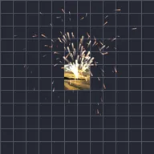

Deeltjes
Laat deeltjes uit de laag vliegen: sneeuw, vonken, confetti, bellen, stof, hartjes, sterren, bloemblaadjes of kleine kopieën van de laag zelf, bewogen door zwaartekracht, wind en werveling. Begin met een voorinstelling en pas daarna de emitter, de hoeveelheid en de krachten aan. Op de beat geeft bij elke beat een uitbarsting: selecteer je muziek, open het menu en tik eerst op Beats markeren.
Instellingen
| Instelling | Type | Bereik | Standaard |
|---|---|---|---|
| Deeltje | Keuze | Sneeuw, Vonken, Confetti, Bellen, Stof, Hartjes, Sterren, Bloemblaadjes, Laag | Sneeuw |
| Emitter | Keuze | Punt, Lijn, Gebied, Contour | Lijn |
| Emissie | Keuze | Doorlopend, Uitbarsting, Op de beat | Doorlopend |
| Tempo | Getal | 0 /s tot 500 /s | 40 /s |
| Aantal | Getal | 0 tot 1000 | 100 |
| Tijdstip uitbarsting | Getal | 0 s tot 3600 s (maximaal de lengte van de laag) | 0 s |
| Herhalen elke | Getal | 0 s tot 60 s | 0 s |
| Beats | Keuze | Elke beat, Elke 2e beat, Elke 4e beat | Elke beat |
| BPM | Getal | 20 tot 300 | 120 |
| Levensduur | Getal | 0.1 s tot 30 s | 10 s |
| Snelheid | Getal | 0 tot 5000 | 30 |
| Richting | Hoek | -3600° tot 3600° | 90° |
| Spreiding | Hoek | 0° tot 360° | 40° |
| Zwaartekracht | Getal | -5000 tot 5000 | 300 |
| Wind | Getal | -5000 tot 5000 | 0 |
| Werveling | Getal | 0 tot 500 | 18 |
| Grootte | Getal | 0% tot 1000% | 100% |
| Kleur | Kleur | – | #FFFFFF |
| Kleur 2 | Kleur | – | #8FD3FF |
| Tint | Getal | 0% tot 100% | 0% |
| Laag | Keuze | Onder deeltjes, Boven deeltjes, Verborgen | Onder deeltjes |
| Diepte | Aan of uit | – | Uit |
| Z-snelheid | Getal | -5000 tot 5000 | 0 |
| Z-spreiding | Getal | 0 tot 5000 | 0 |
| Perspectief | Getal | 0 tot 10 | 1 |
| Meer instellingen | Aan of uit | – | Uit |
| Grootte emitter | Getal | 0% tot 1000% | 100% |
| Positie emitter | Punt (X, Y) | -99999 px tot 99999 px | 0 px, 0 px |
| Vol beginnen | Aan of uit | – | Aan |
| Variatie levensduur | Getal | 0% tot 100% | 20% |
| Variatie snelheid | Getal | 0% tot 100% | 50% |
| Luchtweerstand | Getal | 0 tot 20 | 1.2 |
| Snelheid werveling | Getal | 0 tot 10 | 0.25 |
| Variatie grootte | Getal | 0% tot 100% | 60% |
| Eindgrootte | Getal | 0% tot 1000% | 100% |
| Oriëntatie | Keuze | Vrij, Beweging volgen | Vrij |
| Willekeurige rotatie | Getal | 0% tot 100% | 100% |
| Draaiing | Getal | -3600 °/s tot 3600 °/s | 0 °/s |
| Variatie draaiing | Getal | 0% tot 100% | 50% |
| Infaden | Getal | 0% tot 100% | 5% |
| Uitfaden | Getal | 0% tot 100% | 15% |
| Fonkeling | Getal | 0% tot 100% | 0% |
| Kleurmodus | Keuze | Eén kleur, Willekeurige mix, Over levensduur | Eén kleur |
| Kleurvariatie | Getal | 0% tot 100% | 0% |
| Overvloeien | Keuze | Normaal, Optellen, Bleken | Normaal |
| Seed | Getal | 0 tot 9999 | 0 |
Voorinstellingen
Kies er een op de detailpagina van het effect in de Effectenbibliotheek. Elke voorinstelling is een kant-en-klare instelling die je daarna nog kunt aanpassen.
- Sneeuw

Vonken- Confetti
- Bellen
- Stof
- Hartjes
- Fonkeling
- Bloemblaadjes
- Laagfontein
- Beatconfetti